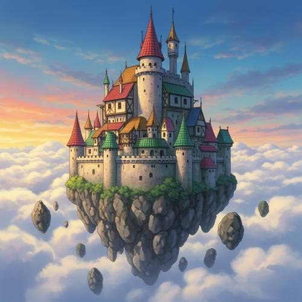
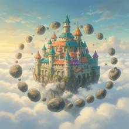
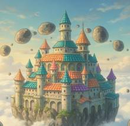

Attribute — In Hayao Miyazaki's animation style, a castle made of colored glazed t
In Hayao Miyazaki's animation style, a castle made of colored glazed tiles is suspended in the clouds. There is no moat around the castle, only floating stones.

Direct — one call, no iterationContinuum — Qwen3.8-27B + FLUX.2-dev
Judge — Direct
FAILAttribute - Material — The castle's walls and towers are predominantly made of light-colored stone blocks. While the roofs of various sections are covered in colorful tiles (red, green, blue, orange), the primary construction material of the castle is not colored glazed tiles.
FAILCompound - Feature Matching — The image successfully depicts a castle suspended in the clouds and surrounded by smaller floating stones. However, the castle itself is not made of colored glazed tiles; its main structure is stone, with only the roofs being tiled and colored.
PASSStyle — The image is rendered in a style highly characteristic of Hayao Miyazaki's animation. The design of the floating castle, the soft and voluminous clouds, the color palette, and the architectural details are all strongly reminiscent of the aesthetic found in Studio Ghibli films.
PASSGrammar - Negation — The castle is depicted on a floating landmass high in the sky, surrounded by clouds. There is no moat or any similar water-filled ditch visible around the castle structure.
Judge — Continuum
PASSAttribute - Material — The roofs of the castle are covered in tiles of various colors, including orange, teal, and purple. The tiles have a texture and slight sheen that is consistent with the appearance of colored glazed tiles.
PASSCompound - Feature Matching — The image depicts a castle with colored tiled roofs, situated on a rocky landmass that is suspended in a sky filled with clouds. The castle is encircled by a ring of numerous floating stones.
PASSStyle — The image is rendered in an animation style characterized by soft lighting, a painterly texture, detailed and whimsical architecture, and a color palette that is strongly reminiscent of the aesthetic found in Hayao Miyazaki's films.
PASSGrammar - Negation — The castle is depicted floating among clouds in the sky. There is no moat or any other body of water surrounding the castle, which correctly adheres to the negative constraint in the prompt.
What the agent did
Thinking
Let me analyze the user's request. The user is asking for an image "in Hayao Miyazaki's animation style" that shows: 1. A castle made of colored glazed tiles 2. Suspended in the clouds 3. No moat around the castle, only floating stones This is a generation task. Following the benchmark policy, I'll use flux2-dev for generation. Let me carefully construct the prompt: - Hayao Miyazaki's animation style (Studio Ghibli-esque: soft watercolor skies, painterly, warm tones, gentle lighting, hand-drawn quality) - A castle made of colored glazed tiles (like a colorful glazed-tile castle — think colorful Japanese tile roofs, or a fantastical colorful castle) - Suspended in the clouds (a castle floating in a sea of clouds) - No moat, only floating stones (instead of a moat, stones/rocks float around the castle) I should fill in visual details that the prompt implies: soft painterly clouds, sky gradient, maybe a bird's-eye view from a certain angle, sunlight. No names or backstory. Let me write a rich visual prompt: "A floating castle in the clouds, Hayao Miyazaki's hand-drawn animation style, Studio Ghibli aesthetic. A fantastical castle built from colorful glazed tiles — roof, walls, and tower shimmer with glazed tiles in teal, coral, ochre, and violet, in soft watercolor paint. The entire castle hovers above a sea of soft white clouds, with wisps of cloud flowing beneath and around it. No moat, no water — instead, smooth rounded stones and rocky chunks of various sizes float in the air around the castle, suspended like the fragments of a moat. Warm afternoon sunlight, painterly sky in soft blue and cream tones, delicate hand-painted texture, soft atmospheric perspective, whimsical and serene mood." Mentioning "no moat" in the prompt is somewhat negative; it's better to phrase it positively: "the castle is surrounded only by floating stones, with no water or moat." A positive phrasing works better. Let me generate the image. Default size (1024x1024) — I could go with a more landscape-oriented composition. The prompt doesn't specify. A floating castle in the clouds looks good in a 4:3 or 16:9 landscape. The harness says "size and seed are controlled by the harness," so I should probably leave the size at default? "Do not set the seed. Size and seed are controlled by the harness." Hmm, does this suggest I should not override the width/height either? It says the harness controls size — meaning maybe I should leave it at the default 1024x1024. I'll leave it at the default square. After generating, I'll inspect it, and if necessary check the text (there is no text here), verify the elements: is the castle made of colored glazed tiles? Is it suspended in the clouds? Are floating stones there? No moat (no water moat)? Let me proceed: generate, inspect, edit if needed, mark best. First call: generate_image with model flux2-dev, no loras.
Step 1 — `generate_image`
{
"model": "flux2-dev",
"prompt": "In the hand-painted animation style of Hayao Miyazaki's Studio Ghibli films: a fantastical castle suspended in the clouds. The castle is built from colorful glazed tiles \u2014 its roof, walls, arches and tiered towers shimmer with teal, coral, ochre and violet ceramic tiles, softly weathered. The whole castle floats high above a soft sea of white clouds, cloud wisps drifting beneath and through it. There is no moat and no water; instead, smooth rounded boulders and rocky chunks of many sizes float weightlessly in the air around the castle, suspended like a ring of stones around it. Warm late-afternoon sunlight, painterly sky in soft blues and cream, delicate gouache textures, gentle atmospheric haze, whimsical and serene mood, full-frame cinematic composition."
}
Result img_0

Thinking
The generated image turned out really well. Let's check: - Miyazaki/Ghibli style: Yes, it has a hand-painted watercolor look with soft clouds and a warm sky. - A castle made of colored glazed tiles: Yes, there are teal, orange, red, and purple glazed tile roofs, and the towers look colorful too. - Floating in the clouds: Yes, the castle is floating on top of / inside a sea of clouds. - No moat, only floating stones: Yes, there's a ring of floating rocks/boulders around the castle, with no water. All the elements are in place. The style is pretty close to Ghibli. The composition is good too. There's a rock spire under the castle, and this is fine (the castle is built on a floating island of stone). One thing to check: the style could be said to have a slightly "modern digital" feel rather than a pure hand-painted feel, but it's clearly Ghibli-esque and well done. The request has been met. Let's do a quick inspection to check the details — for example, zooming in on the castle to confirm the glazed tile texture and check that there's no moat (i.e., no water). Actually, at a glance I can already confirm: no water, only clouds and floating stones. The tile roofs look like glazed ceramic. I think this is good enough to submit. Following the policy, mark this as the best and stop. "Good enough is a stopping condition." Let's mark img_0 as the best.
Model
The first render nails all the requested elements. Let me verify the details up close before marking.
Step 2 — `inspect_region`
{
"image": "img_0",
"roi": "the castle with its tiled towers",
"padding": 0.1
}
Result img_1

Thinking
Confirmed the following from the cropped image: - The castle is built with glazed ceramic tiles in teal, orange, red, and purple — clearly tile work, with a glazed finish. - Floating in the clouds — the castle sits atop a rock islet emerging from a sea of clouds. - Floating stones arranged in a ring around the castle, no moat/water. - Ghibli-style hand-painted gouache atmosphere. Everything checks out. This is the result I can submit. I'll mark img_0 as the best and stop here.
Model
On close-up verification, I confirmed that all the elements of the prompt are in place: - **Miyazaki style**: A soft gouache/watercolor atmosphere with a warm painterly sky and gently drifting clouds - **Castle of colored glazed tiles**: The roof and spires are covered in ceramic tiles of teal, coral, orange, and purple, with a clear glazed finish - **Suspended in the clouds**: The castle rests on a rocky islet floating within a sea of clouds, with cloud wisps rising up around the base - **No moat, only floating stones**: Instead of a water-filled moat, smooth boulders of various sizes float in a ring around the castle
Step 3 — `mark_best`
{
"image": "img_0",
"reason": "All prompt elements verified: Ghibli-style hand-painted look, glazed multicolored tile castle floating in clouds, ring of levitating stones instead of a moat."
}
Thinking
The image has been marked as the best. The task is complete. I'll give a concise final summary.
Model
The image is complete and marked as the best result. It shows a fantastical castle in a Miyazaki-style hand-painted animation aesthetic, its tiered towers and arches clad in glazed teal, coral, orange, and violet tiles, suspended on a rocky islet amid a sea of clouds — surrounded not by a moat but by a ring of weightless floating boulders in soft golden-afternoon light.